GovTech
GovTechcase · 01
Редизайн CRM «КПИ»
2069элементов дизайн-системы · тактика и стратегия за 2 месяца
Senior Product Designer·продукт с 2016
ФГУП «ГлавНИВЦ» УДП РФ — единый центр экспертизы и ИТ-интегратор для подведомственных структур (санатории, управление персоналом, аналитика). Компания работает в закрытом высокозащищённом контуре, где ПО создаётся под уникальные задачи ведомств, а не на массовый рынок. Дизайн-функция как класс отсутствовала.
Продукт «Обращения» для трёх платформ Сбера: SmartCare (линия поддержки), СБОЛ.про (рабочее место сотрудников офисов) и мобильное приложение для клиентов. В экосистеме с миллионной аудиторией требовалось улучшить качество обработки запросов, снизить нагрузку на экспертов и ускорить решение проблем пользователей.
Проектирование MVP и первых версий Бизнес-портала ДБО для стартапов и микро-бизнеса. Проведение фокус-групп и UX-исследований для поиска ниши и валидации концепций.
Масштабирование Бизнес-портала в полноценную платформу для МСБ. Миграция пользователей с устаревшей системы BSS.
Цифровое агентство, полный цикл проектирования: e-commerce, порталы, мобильные приложения.
GovTech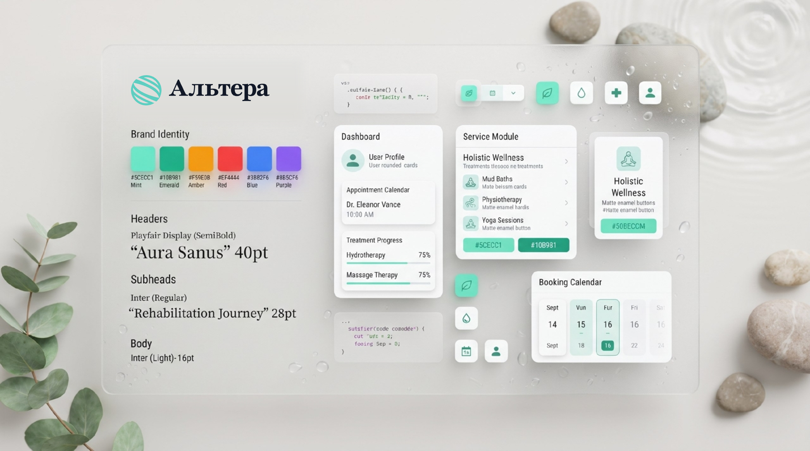
HealthTech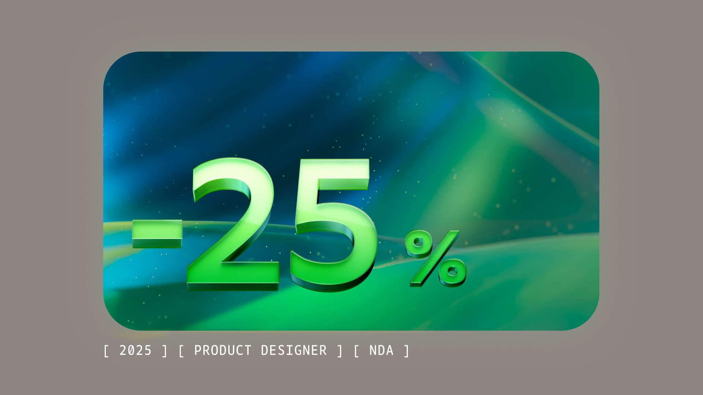
FinTech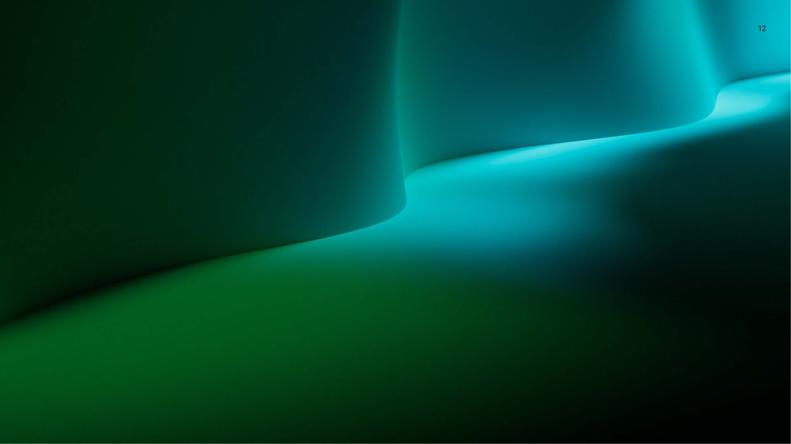
FinTech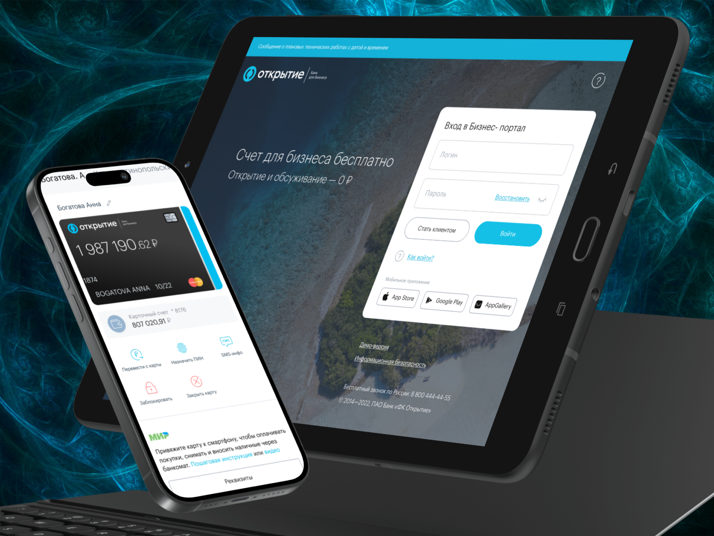
FinTechПродуктовый дизайнер с более чем 9-летним опытом создания сложных B2B и B2G продуктов. Специализируюсь на высокорегулируемых средах (финтех, госсектор, enterprise), где критически важно найти баланс между требованиями законодательства, техническими ограничениями и потребностями пользователей. Бэкграунд в психологии позволяет исследовать поведение пользователей и проектировать стратегию взаимодействия, а не просто рисовать экраны.
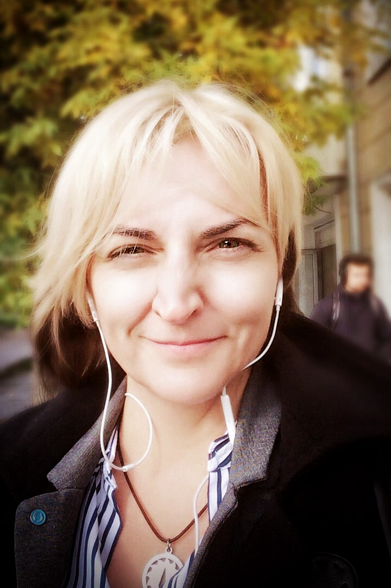
Платформа управления персоналом · Product Designer / Дизайн-лид · [ май — июнь 2026 ]
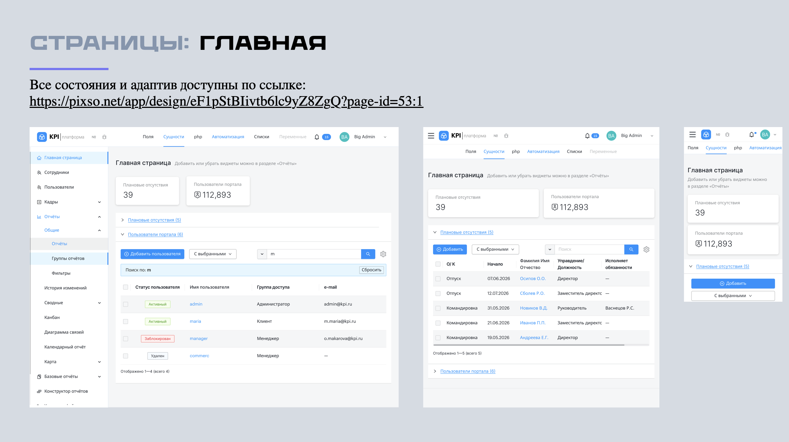
Компания — государственный интегратор и центр компетенций для высшего эшелона власти (УДП РФ). Продукт — внутренняя CRM для управления персоналом и МИС, работающая на устаревшем фреймворке Bootstrap с 200+ разрозненными экранами и отсутствием единой логики.
Требовалось улучшить UX «здесь и сейчас» и заложить основу для миграции на новый технологический стек.
Работа выстроена по двум параллельным трекам — быстрый результат для пользователей и системная база для будущего движка:
Полная инвентаризация всех существующих экранов, затем «скин» — перекраска текущего Bootstrap-интерфейса по новым токенам. В кратчайшие сроки: лучше визуальное восприятие и ниже когнитивная нагрузка на пользователей.
Параллельно спроектирована полноценная дизайн-система по принципу «Токены → Атомы → Молекулы → Организмы». Она не зависит от ограничений старого кода и будет работать на новом движке.
Создана фундаментальная система, которая перевела продукт из состояния «хаоса» в структурированные компоненты:
Переход от 200+ разрозненных артефактов к 70+ системным элементам: энтропия продукта снизилась в 4–5 раз. Каждый компонент получил полную спецификацию и готов к передаче в разработку.
Модуль врача-терапевта · Product Designer / UX-Research / UI Architect · [ июнь — авг 2026 ]
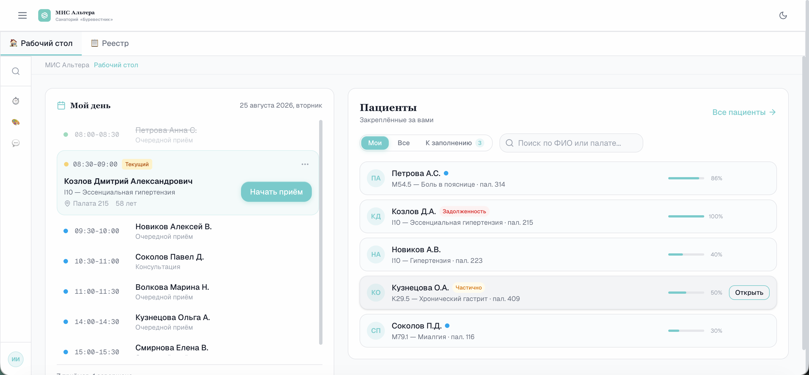
Компания (в структуре ГлавНИВЦ) владела устаревшей МИС «Практика.Санаторий» на legacy-стеках. Бизнес-заказчик хотел новый современный модуль для врачей, но поставил жёсткие рамки: нет доступа к живой системе — только 10 статичных скриншотов, и нет возможности пообщаться с реальными врачами-пользователями.
Основная задача — создать эргономичный, минималистичный интерфейс для самой популярной роли, терапевта (работает с 13–17 пациентами в день), минимизировав когнитивную нагрузку и время на ввод данных.
Работа выстроена в 4 этапа — способность принимать решения в условиях неопределённости:
Изучила 10 скриншотов легаси и выделила ключевые сценарии: приём, назначение процедур, контроль исполнения, контроль платности.
Запустила опросные листы в Яндекс.Формах по клиентам, чтобы верифицировать болевые точки; заложила архитектуру под будущие роли — процедурная сестра, палатная сестра, врач-специалист, администратор.
Вместо использования готового Blazor-SDK «как есть» (это привело бы к возврату к устаревшему интерфейсу) — обоснование на основе законов Хика и Миллера. Предложила архитектуру «Костяк + Кожа»: SDK отвечает за логику, а кастомная дизайн-система (CSS-переменные и wrapper-компоненты) управляет компоновкой и эргономикой. Это не сломало текущую разработку и избавило от двойной работы в будущем.
Создала краткий брендбук (медицинский минимализм), дизайн-библиотеку стилей и спецификации UI-компонентов под заявленный стек (Blazor/Tailwind).
Разработан и запущен полнофункциональный интерактивный прототип основного сценария врача: дашборд, реестр, карточка пациента, расписание.
Концепция
От природных материалов к цифровому интерфейсу: исследование тактильности, прозрачности и спокойствия для медицинского продукта.
Живой UI-Kit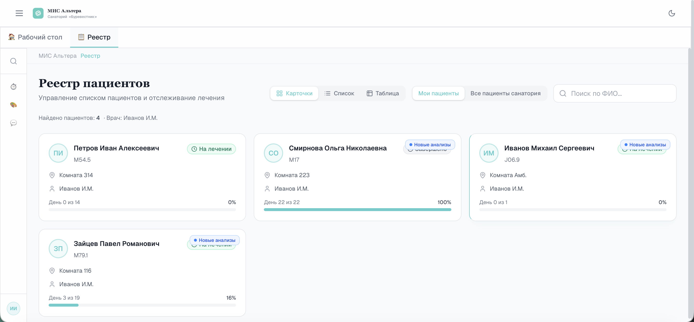
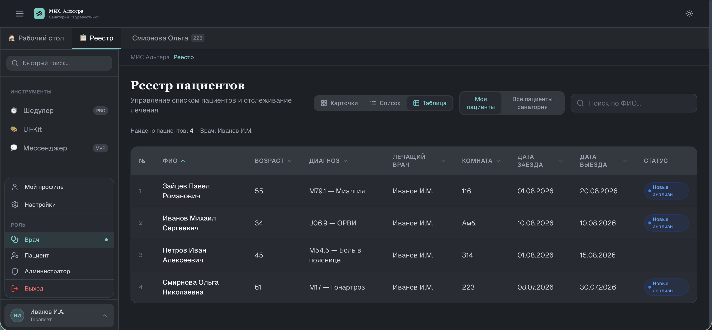
Создан полностью готовый к передаче в разработку MVP-модуль терапевта — включая спецификации для Blazor. Наследие проекта шире одного модуля:
Полные технические спецификации и стратегическое обоснование для разработки (Blazor, UI-паттерны) доступны по запросу.
СБОЛ.про · Обращения · [ 2025 ]
Сотрудники офисов банка переходили на новую справочную систему, которая заменила несколько информационно-справочных систем. Старая система строилась на жёстком последовательном 5-уровневом классификаторе. Это приводило к высокой нагрузке на внутренних специалистов, частым ошибкам классификации и увеличению времени решения проблем клиентов.
Критической задачей было обеспечить плавный переход без падения качества обслуживания.
Product Designer. Проведение UX-исследований (гемба, глубинные интервью, UX-тестирование), анализ эффективности работы, проектирование AI-помощника, координация с командой разработки и data science.
Спроектировала и внедрила два последовательных сценария с интеграцией AI-решений:
Жёсткий последовательный 5-уровневый классификатор
Высокая нагрузка на внутренних специалистов
Частые ошибки классификации
Увеличение времени решения проблем клиентов
1. Сквозной умный поиск — заменила последовательный классификатор на смысловой поиск (быстрый выигрыш)
2. Диалог с AI-ассистентом — после UX-тестирования заменила шаг с классификатором на диалог: ассистент либо сразу предлагал способы решения, либо самостоятельно присваивал верную классификацию и регистрировал обращение
Значительное сокращение трудозатрат и времени обработки обращений. Конкретные метрики:
Линия поддержки Сбера · [ 2023 — 2025 ]
SmartCare — внутренний инструмент для сотрудников линии поддержки Сбера. Проблема была не в одном функционале, а в отсутствии системности: разные продуктовые команды выкатывали свои паттерны и сценарии, создавая путаницу. Это приводило к высокой когнитивной нагрузке на операторов, увеличению времени обработки звонков и долгому обучению новичков.
Задача — без резких переворотов, а плавно и систематически повышать эффективность работы поддержки в течение двух лет.
Product Designer. Моя стратегия — не «разовый редизайн», а постоянная итеративная работа над эволюцией продукта. Я проводила множество UX-исследований, которые, помимо проверки гипотез нового функционала, выявляли глубокие конфликты в паттернах работы между командами. Ключевым решением стала стандартизация: я привела все сценарии и паттерны к единому знаменателю для всех команд портала.
Стандартизация паттернов. На основе исследований выявила и устранила нелогичные сценарии, конфликтующие между собой. Это стало фундаментом для единого UX-стандарта, который приняли все продуктовые команды.
Ключевой кейс: Сценарий быстрого возврата средствПостроила на гипотетических «стек-холдер» паттернах.
Провела двухнедельное UX-тестирование на реальных сотрудниках (разного возраста и опыта).
Тесты показали, что сценарий слишком сложен. Кардинально упростила его и привлекла UX-редакторов, которые заменили технические формулировки на привычные сотрудникам термины.
Новая функция была принята сотрудниками без сопротивления и не привела к падению скорости обслуживания.
За два года итеративной работы — четыре ключевых результата:
Платформа ДБО для МСБ · Банк «ФК Открытие»
В 2016 году, когда я присоединилась к проекту как единственный дизайнер, банк не входил даже в топ-20 рейтинга Markswebb. Я спроектировала и выпустила MVP бизнес-портала в ноябре 2016. Продукт сразу стал приносить прибыль и попал в независимый рейтинг Business Internet Banking Rank (19-е место), что стало точкой отсчёта для последующего роста до 2-го места в 2020 году.
Senior (2016 — 2019) — единственный дизайнер проекта. Спроектировала и запустила MVP с нуля, проводила первые фокус-группы и исследования, заложила основы архитектуры интерфейса.
Lead Product Designer / Design Team Lead (2019 — 2022). Выстроила дизайн-функцию с нуля, создала дизайн-систему на Atomic Design.
Семь лет продукта — три больших этапа:
Начало работы: фокус-группы, тестирование маркетплейса, оценка первых макетов вместе с целевой аудиторией.
Точка отсчёта · ранние экраны (2016) Оценка макетов · первые тесты Проектирование сценариев и флоуUX-исследование миграции с BSS (проблема двух подписей), экспертная оценка SWIFT GPI.
Создание дизайн-системы (Atomic Design) и масштабирование на 15+ продуктов экосистемы.
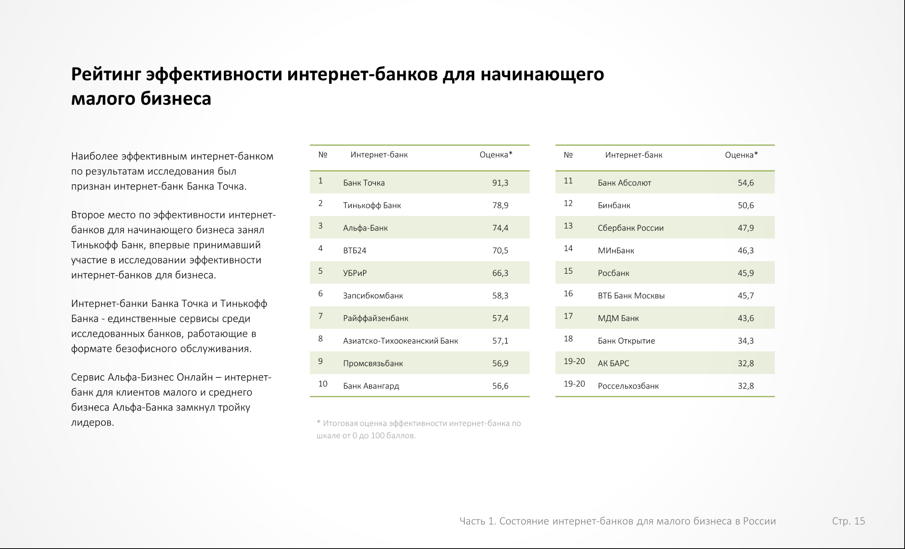
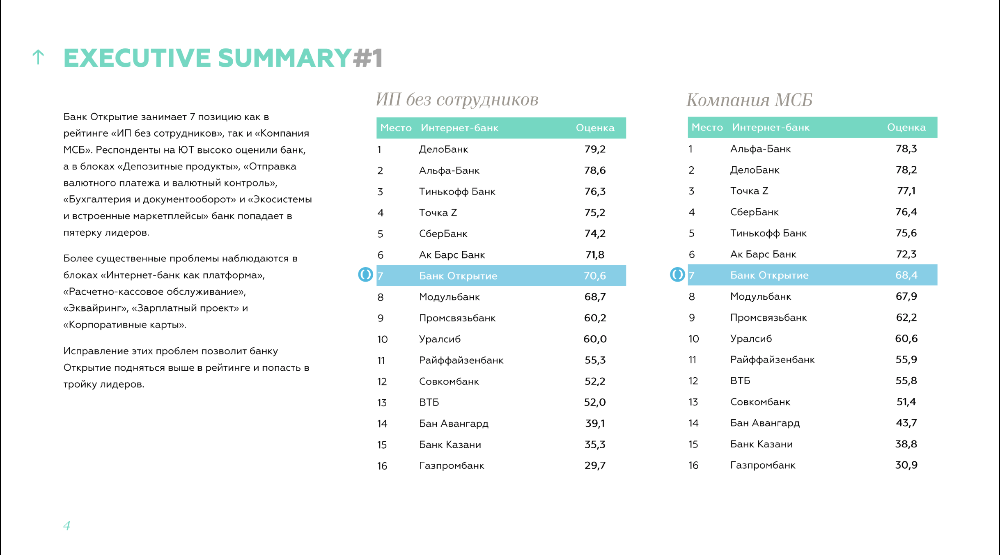
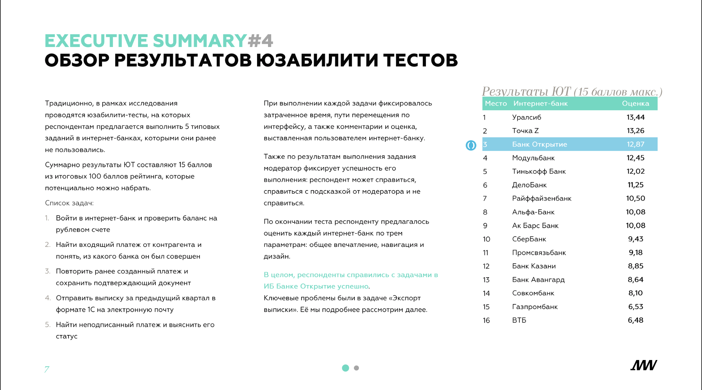
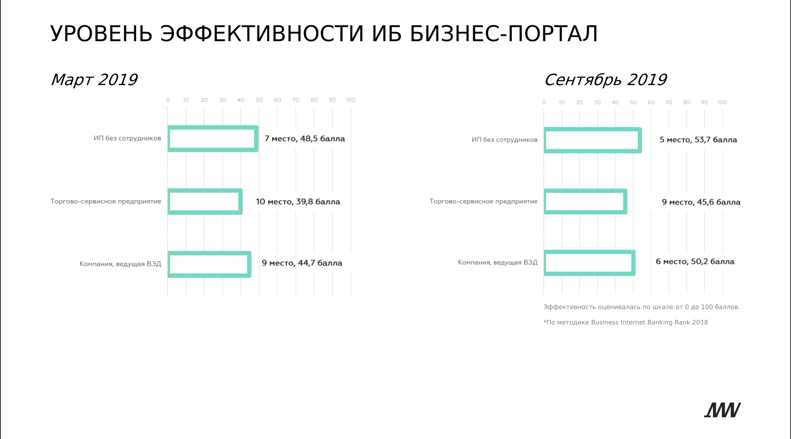
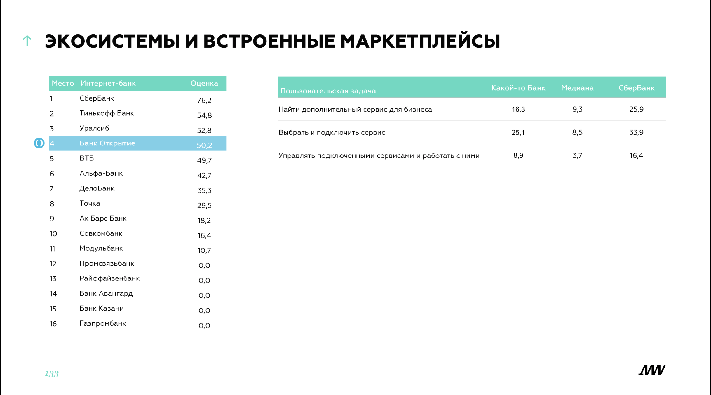
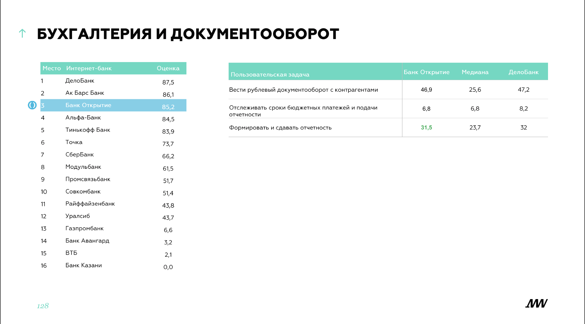
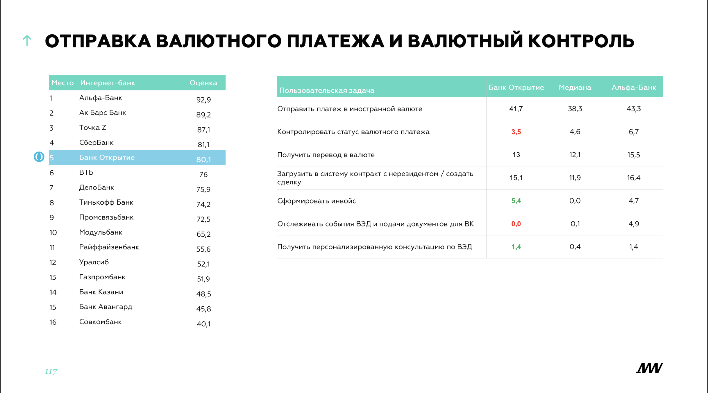
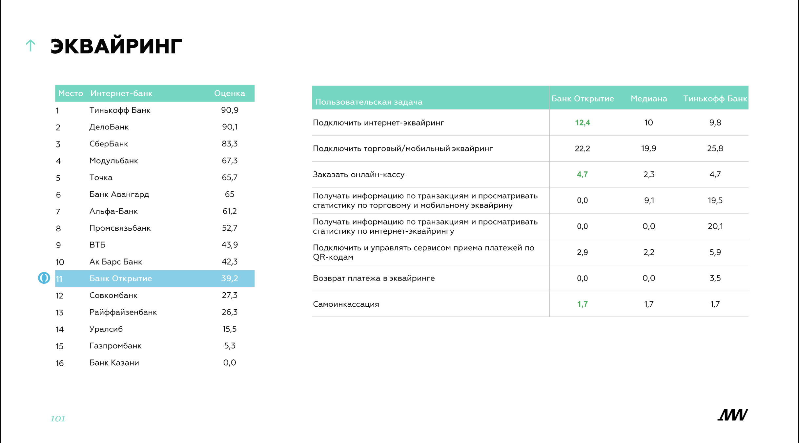
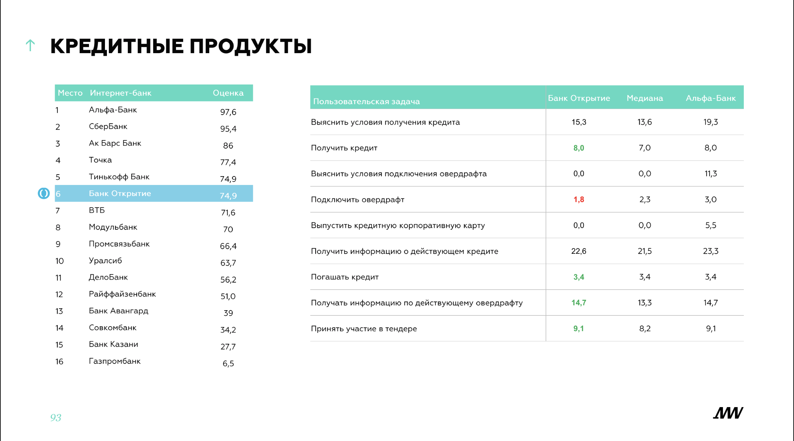
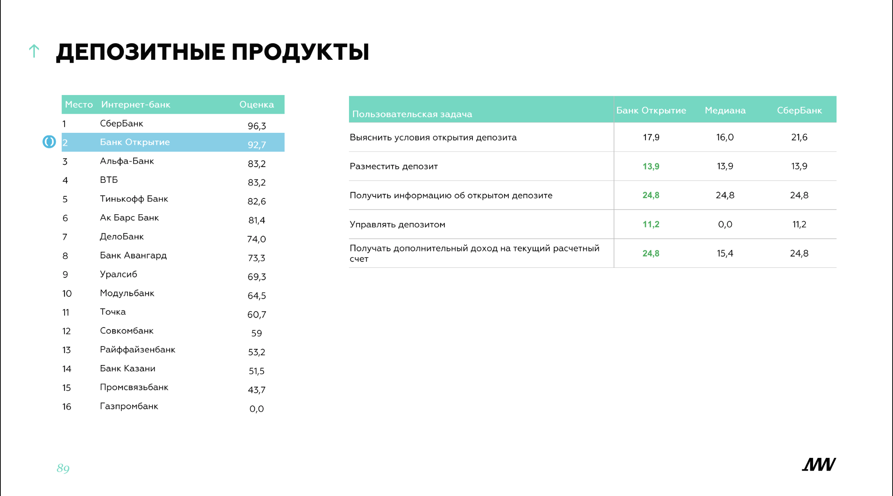
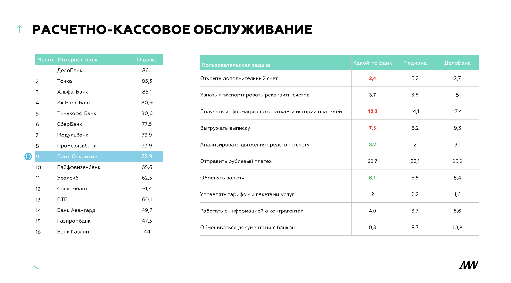
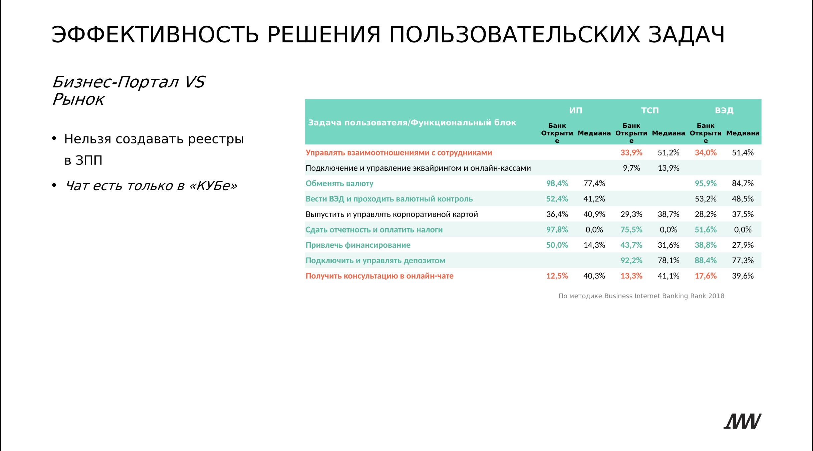
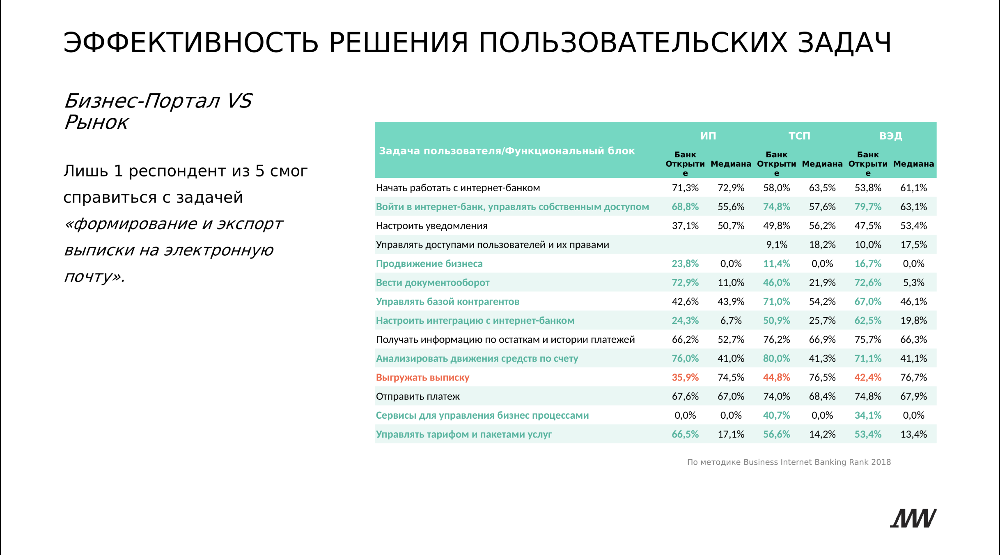
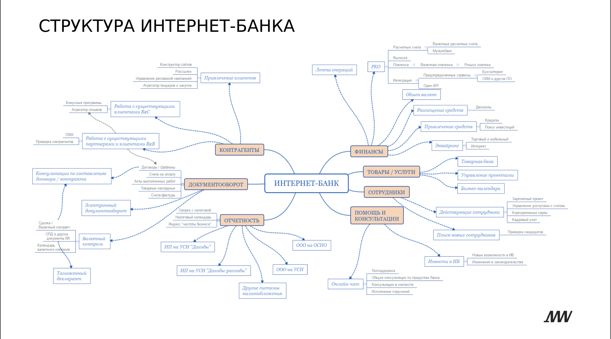
19-е место (2016) — именно с этой точки стартовал продукт, который я собрала как единственный дизайнер. Это был мой первый выпущенный MVP.
Публичное признание Итоги семи летПродукт вышел на прибыльность в первый же квартал после релиза MVP (ноябрь 2016).